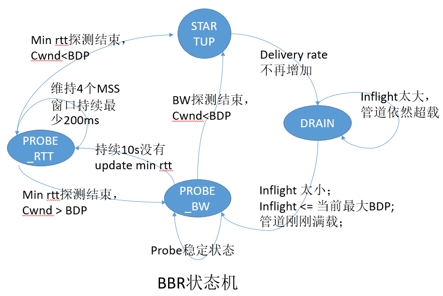

BBR是Google在2016年提出的一种拥塞控制算法，在Linux kernel@4.9及以后的版本中已添加该算法。在Google通过paper将BBR公布前，BBR算法应该在Google自家World Area Network中早已投入使用。Google后来提出基于SDN的B4网络（paper叫做B4，很有名的一篇paper），其拥塞控制算法也是使用的BBR。
丢包即拥塞的思想已经沿用了很多年，很多拥塞控制算法也是基于此的，比如当前Linux kernel的默认拥塞控制算法CUBIC，还有Reno和FAST TCP等，都是基于这一思想进行的拥塞控制。在技术受限的年代，这一思想（丢包即拥塞）没有错，但是，现在，当NIC（network interface controllers）的处理能力从Mbps升级到Gpbs，memory chips从KB升级到GB，拥塞和丢包的关系就没那么紧密了。
在现在high BDP网络环境下，丢包即拥塞思想带来的问题包括：当因为bottelneck buffers满而出现丢包时，会引起bufferbloat现象，网络延迟高；但是，当bottleneck buffers很小时，这时出现丢包，网络会误认为是发生了拥塞，从而降低发送窗口，这样就会造成low throughput。想要解决上面的问题，那么就需要抛弃基于丢包的拥塞控制思想，换个新的。

上图其实是两个图，只不过有共同的横坐标，想当初弱智的我看了半天，才明白这是两个图。图中的一些符号解释如下：
基于丢包的拥塞控制如图中指出的那样，其作用域在bandwidth limited，这时bottleneck buffers慢慢被填满，最后导致buffer溢出，出现丢包。在早前，memory价格较贵时，buffer sizes约等于一个link BDP，现在由于技术的进步，memory价格一直下降，buffer sizes越来越大，都快高出link BDP一个数量级。这样，delay也由以前的milliseconds升到了seconds，自然也带来了bufferbloat（缓冲区爆满，排队延迟影响网络整体性能）。其实之前有paper专门针对bottelneck buffer设置为多大给出了其研究结果，等于一个link BDP是最好的。
Characterizing the bottleneck
要达到highest throughput和lowest delay，connection必须同时满足两个条件：
- the bottleneck packet arrival rate equals BtlBw;
- the total data in flight is equal to the BDP(BtlBw*Rtprop);
第一个条件保证bottelneck被100%的利用，第二个条件防止bottleneck出现饥饿，但又不会溢出。
因为$BtlBw$和$PTprop$在整个过程中一直是变动的，所以需要一直不断的测量。在任何时刻$t$，
$$RTT_t = RTprop_t + \eta_t$$
这里$\eta>=0$表示‘noise’，比如接收端的延迟ack策略，ack aggregation策略等。因此$RTprop$是不可能准确测量的，只能估算，像大多数算法测量最小$RTT$做的那样：
$$\hat{RT}prop = RTprop + min(\eta_t) = min(RTT_t)$$
根据从receiver返回的ack，我们可以知道当前ack确认数据包的$RTT$和离开sender留存在网络中的确切数据包数。因为我们可以准确知道当前的发送序号snd_nxt，以及其确认序号snd_una，如果开启了SACK也可以准确知道，只不过需要walk一遍SACK段。这样我们便可以测量平均delivery rate:$deliveryRate = \Delta delivered/\Delta t$。在这个过程中delivered是可以准确知道的，而$\Delta t$则会大于真实interval，因为受网络噪声的影响，所以$delivery rate <= bottleneck rate$，那么我们可以这样评估BtlBw:
$$\hat{BtlBw} = max(deliveryRate_t)$$
MATCHING THE PACKET FLOW TO THE DELIVERY PATH
The core BBR algorithm has two parts:
When an ack is received
每一个ack都会提供一个新的RTT和delivery rate值，用来更新$RTprop$和$BtlBw$，伪代码如下：
在数据传输过程中，senders可能成为application limited，也就是application有机会发送更多的数据，但是没有数据可以发送，这是一个很普遍的现象。
When data is sent
为了使packet-arrival rate和bottleneck link’s departure rate相匹配，BBR必须paces每一个数据包。pacing_rate是BBR的主要控制参数，另外一个参数是cwnd_gain，用来限定inflight为小倍数的BDP，伪代码如下：
Steady-state behavior
由上面可知，测量$BtlBw$和$RTprop$都有独立的函数去完成，在bottleneck的约束下会形成一个控制循环，那么带来的效果如下图所示：
图中蓝线是RTT， 绿线是inflight，红线代表delivery rate，delivery rate上方的粗灰线表示BtlBw max filter的状态。
BBR通过保证inflight大多数时候为一个BDP来最小化delay。这样bottleneck就被转移到了sender，因为sender看不到BtlBw的变化，因此BBR需要周期性的通过pacing_gain > 1来测量BtlBw是否变化，当发现形成queueing delay时， 将pacing_gain设为小于1便可消除queueing delay。
BBR除了探测网络带宽是否变化外，还会周期性的探测往返传播延迟（RTProp），因为要考虑到传输路径等一些其他能影响到传播延迟的因素。每收到一个ack都会更新RTProp，但当RTProp有一段时间（比如10s）没更新了，BBR便会进入探测RTT模式，其探测方式主要是通过将inflight减少为4个数据包（比如设置cwnd=4），这种状态维持至少一个往返延迟，然后回到探测前的状态。需要注意的是并不是只对一条数据流这样设置来探测，而是所有的数据流一起进入探测模式。
BBR自己的状态机
首先给出其状态切换图

google的BBR是一种对丢包不敏感的拥塞控制算法，理论上它是不care外部的TCP拥塞状态（loss, recovery）的，它只根据自己测量的即时rate来调整cwnd的大小，即BBR只负责发送多少数据包，至于发哪些数据包它不管。而传统的拥塞控制算法，当碰到丢包时，网络便交给了快速恢复算法（比如PRR）接管，拥塞控制算法是不能插足的，直到重传结束返回到open状态。所以当网络丢包率比较大的时候，网络可能一直处于重传阶段，而CUBIC可能就短暂的接管过网络，之后一直是PRR接管，造成带宽利用率低下。
BBR自己的状态机的PROBE_RTT保证即时探测min rtt，从而保证网络的低延迟；而PROBE_BW保证即时探测网络带宽变化，从而保证充分利用带宽；DRAIN保证STARTUP结束时带来的queueing delay即时被排空。
还有一点需要注意的是BBR没有ssthresh，因为根据计算的delivery rate就可以大致推断sender的发送速率是否达到网络带宽上限。
总结
其实BBR的思想和CUBIC相比很简单，其最终的效果据google自己说很好。本人在自己搭建的环境中，在同样的参数下，对比过CUBIC和BBR，快速恢复算法都使用的PRR，BBR明显的比CUBIC要好。但没有实际跑过和vegas、westwood等传统的拥塞控制算法做对比。不过各类拥塞控制算法都有其适用环境，具体看需求。
参考文献：
BBR Congestion-Based Congestion Control
Sizing Router Buffers